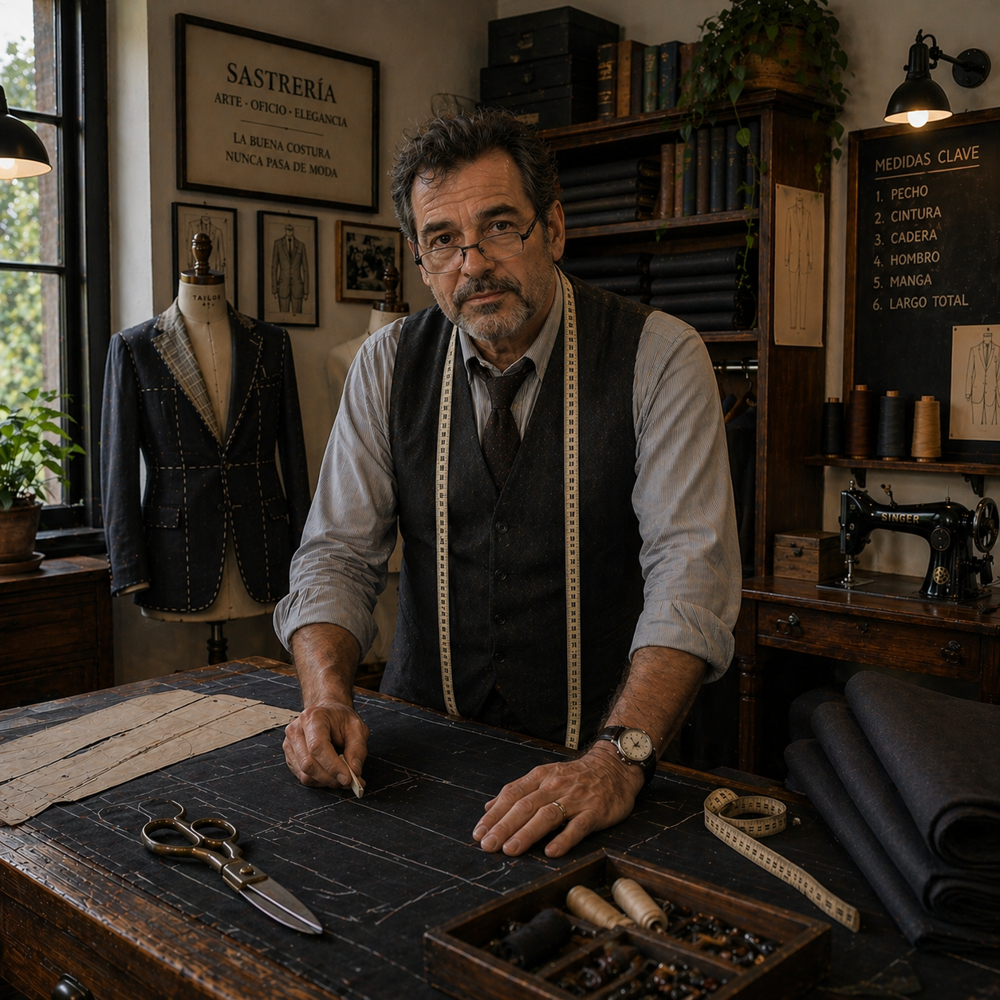
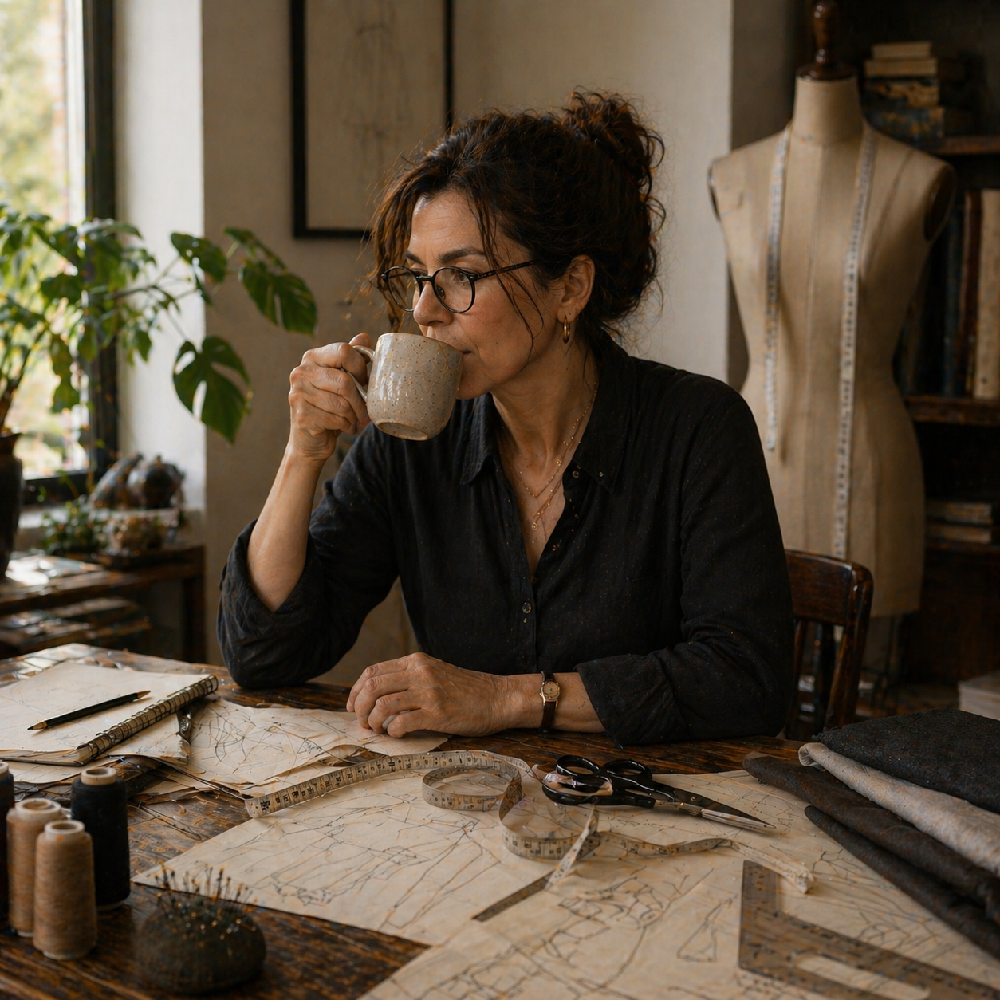
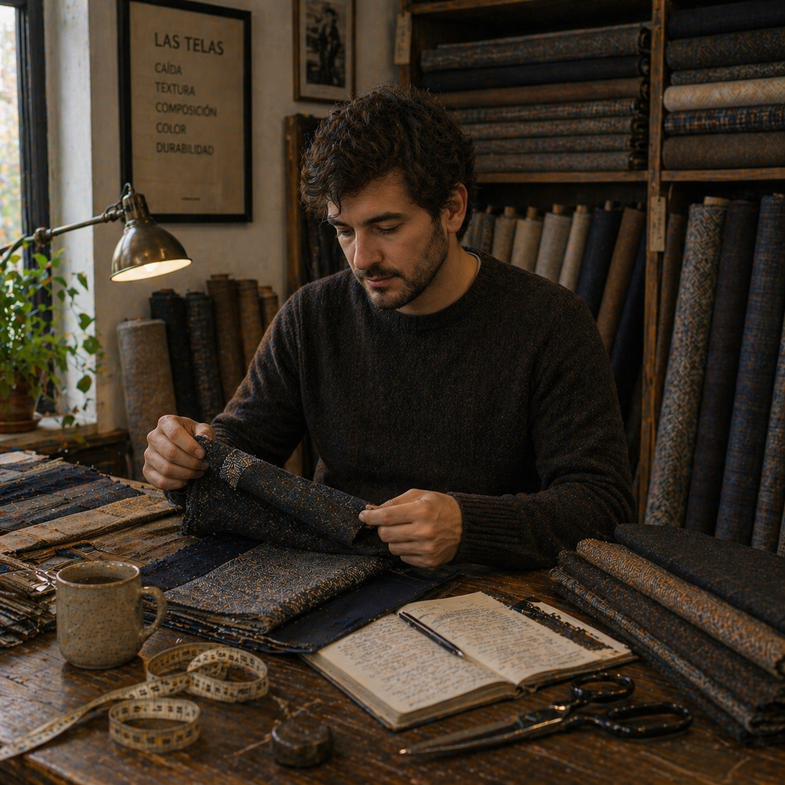

Creaciones Marco nació de las manos y la visión del Maestro Marco Rodríguez, quien aprendió el arte de la sastrería de su padre en Florencia, Italia, y trajo ese conocimiento a Costa Rica con un propósito claro: vestir a quienes exigen lo mejor.
Hoy, más de 25 años después, nuestro taller en San José combina técnicas tradicionales europeas con el gusto contemporáneo, atendiendo a empresarios, políticos, artistas y novios que entienden que un traje bien hecho es una inversión en su imagen.
Confeccionar prendas de vestir masculinas y femeninas con los más altos estándares artesanales, garantizando un ajuste perfecto y materiales de primera clase.
Ser reconocidos como la sastrería de referencia en Centroamérica, expandiendo nuestra presencia sin comprometer la exclusividad del servicio personalizado.
Excelencia, honestidad, dedicación artesanal y respeto al tiempo y la inversión de cada cliente guían cada decisión en nuestro taller.
Maestro Sastre — Fundador

Diseñadora de Patronaje

Especialista en Telas